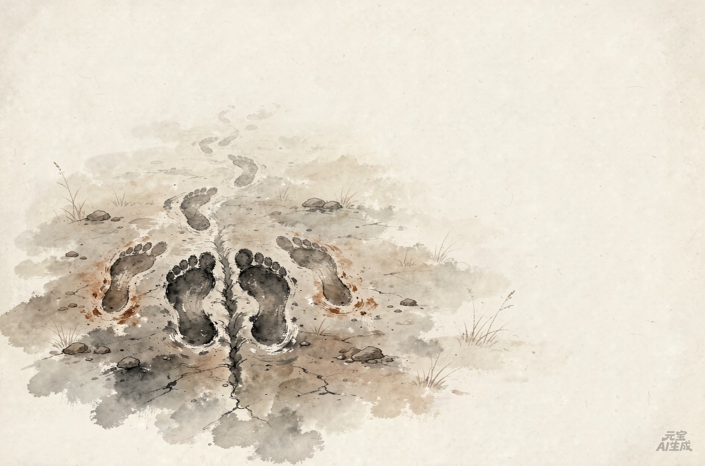
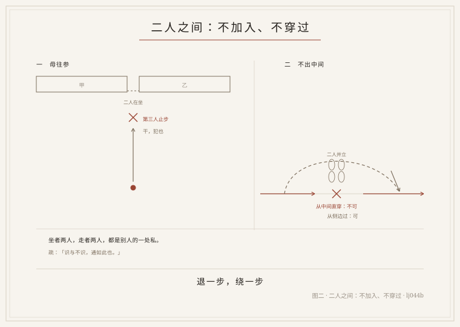

曲礼上 · 一·四十六 · 第 44 课
两个人并坐或并立，就是一处私域；第三人不要凑进去。路上遇见两人并立挡着，从旁边绕，不要从两人中间穿过去。
说什么事：离坐离立，毋往参焉；离立者，不出中间。
落在哪一层：教。上节讲一双鞋的上下，此节讲第三个人的进退。
为何编在此位：一·四十五讲「与长者」的距离，此节讲「与二人」的距离；尊者之外，还有「二人」这一种最小的私。
【经】離坐離立，毋往參焉。離立者，不出中間。
离坐离立 郑注：「为干人私也。离，两也。」疏：「若见彼或二人并坐，或两人并立，既唯二人，恐密有所论，则己不得辄往参预也。」又引《易·象》「明两作离」，证「离」为两。
毋往参焉 参，参预、参入。疏以「参预」释之：不是不许见面，是不许插进两人之间。
离立者，不出中间 疏：「若见有二人并立当己行路，则避之，不得辄当其中间出也。」又：「不云离坐者，道路中非安坐之地，故不云坐也。」——这一句只管行走，不管坐。
识与不识 疏末：「识与不识，通如此也。」——认识的、不认识的，一样绕。
二人并坐、二人并立，不要凑过去参与。二人并立挡在路上，不要从他们中间穿过去。
一句说「不要加入」，一句说「不要穿过」。加入与穿过，都是把自己塞进两个人之间那条缝里；这条缝，礼把它当成别人的地方。
第一层 「离，两也」：二的数目就是私域 郑注只用一个字解「离」：两。疏引《易·象》「明两作离」。二人成「离」，第三人一进来，这个「两」就破了。所以礼数的起点不是「人多」，是「二」。
第二层 毋往参：不加入 所防者是「干人私」——干，犯也。二人在一处低声说话，你走过去坐下，无论有心无心，都犯了他们的私。疏说「恐密有所论」，是把「可能」也算进去：不必真有事，可能是事，就该退。
第三层 不出中间：不穿过 坐着的两人可绕，走着的两人挡路，最省事的走法是从中间过去。礼不许。绕一步，是把「你们的中间」留给这两个人。
第四层 识与不识通如此 熟人更易犯：熟人之间插话，理由总是「我们又不是外人」。疏特意点明识与不识一样，正为此。
与今日何干 今日二人低声说话，第三人凑近听；两人并排站着聊天，第三人从其间挤过——两件事都被当成无所谓。此节只给两步：退开，绕行。
| 左 | 右 |
|---|---|
| 离坐离立，毋往参焉 | 为干人私也 |
| 离，两也 | 《易》：明两作离 |
| 二人并坐并立，恐密有所论 | 己不得辄往参预 |
| 离立者，不出中间 | 不得当其中间出 |
| 不云离坐 | 道路中非安坐之地 |
| 识与不识 | 通如此也 |

